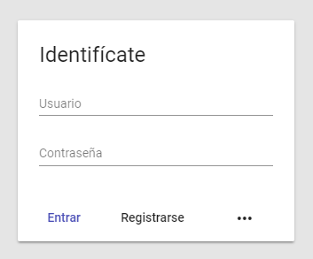
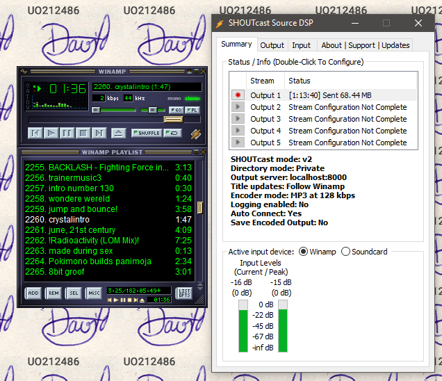
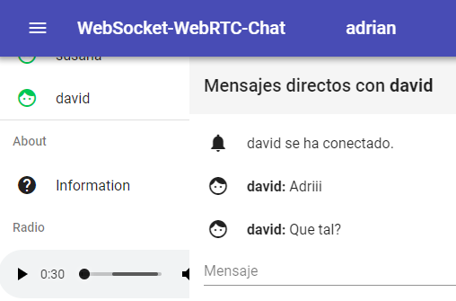

David Gonzalez García - UO212486
Control de acceso a usuarios
Autenticación de usuarios, Registro rápido de usuarios.
El menú permite iniciar sesión con usuarios de prueba de forma rápida.Base de datos MongoDB con Mongoose
/* Connect to database */
(async function () {
/* await */mongoose.connect('mongodb://156.35.98.110:32769/persistence')
const db = mongoose.connection
db.on('error', err => console.error('connection error:', err))
db.once('open', () => console.info('Connected to the database.'))
db.once('disconnected', () => console.info('Disconnected from the database.'))
})()
Gracias a los web sockets

Los usuarios de la aplicacion pueden escuchar la radio.
